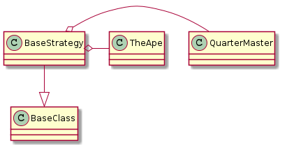

This is a holder of sub-commands for the arguments. Its main purpose is to provide the QuarterMaster and Ape-plugin, since one or both is being used by various sub-commands.

There are two kinds of exceptions caught which produce two error-messages:
| Exception | Message | Meaning |
|---|---|---|
| Exception | APE Error | Something unexpected happened – this indicates a problem with the code |
| KeyboardInterrupt | Oh, I am slain | User killed the runtime for some reason – clean-up and then close |
The decorator (try_except) around most of these methods is blocking the docstrings. Follow the links to the source code to see what they do.
UbootKommandant |
|
UbootKommandant.handle_help |
|
UbootKommandant.run |
|
UbootKommandant.fetch |
|
UbootKommandant.list_plugins |
|
UbootKommandant.check |
|
UbootKommandant.clean_up |